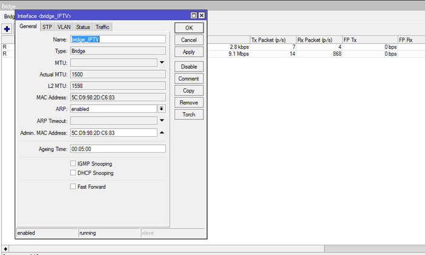
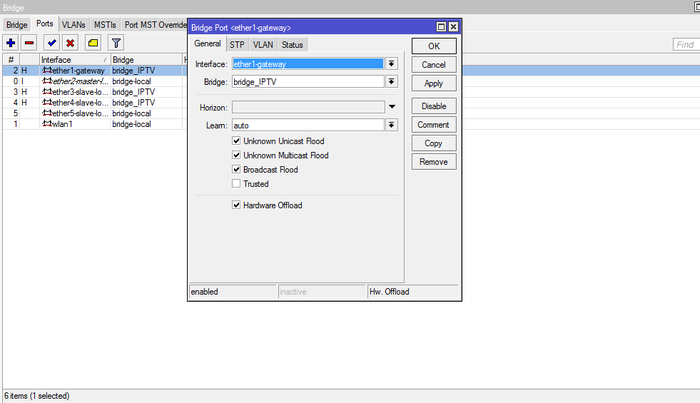
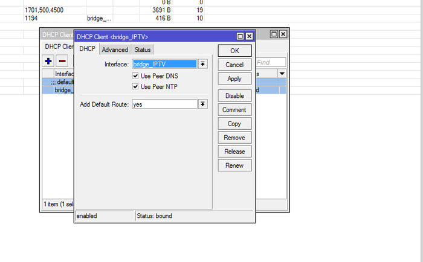
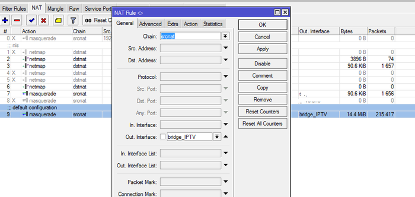
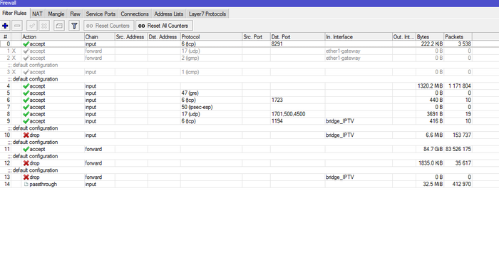

Настраиваем IPTV на роутере Mikrotik
Всем добра!
Это мой пятый пост, являюсь специалистом по видеонаблюдению и веду портал vcctv.ru
Статья не совсем по теме видеонаблюдения, но когда-то изрядно намучился с настройкой iptv на роутере Mikrotik, поэтому для тех кто только столкнётся с этой проблемой или решил её с помощью дополнительной установкой коммутатора, теперь может легко и просто настроить iptv на RouterOS.
Уверен, что многие у кого имеется роутер Mikrotik и подключено iptv сталкивался с не тривиальной настройкой. Особенно, зная как это настраивается на простых роутерах типа Asus, Tplink и т.п., где достаточно поставить галочку что вот на таком-то порту работает iptv, становилось немного грустно. При первом же гуглении в результатах поиска появляются описания как настроить iptv с помощью пакета multicast, какие-то скрипты для iptv, если у вас провайдер Beeline и опять про пакет мультикаста. Лично сам помучившись с мультикастом, т.к. было ещё и интересно... столько нужно было действий совершить. Решил, что это не благодарное дело :) и гораздно проще iptv настраивается, если порты объединить в свитч. Буду как всегда краток, приступаем к настройке RouterOS.
Первым делом создаём новый бридж. Подключаемся через Winbox, заходим в Bridge

Далее добаляем в бридж порт ether1 - куда скорее всего подключен у вас провайдер и порт, к которому подключена iptv приставка. В моем случае это было два телевизора, подключенных к 3 и 4 порту

Теперь в зависимости как вы получаете ip адрес от провадера на интерфейс bridge_IPTV прописываете статический адрес (IP-Address), или же если вы получаете его автоматом, то настраиваете dhcp client (IP-DHCP Client) на bridge интерфейс

Чтобы работал интернет в настройках IP-Firewall-NAT в правиле маскарадинга меняете Out. Interface на bridge_IPTV

И соответственно меняете необходимые правила фаервола на bridge_IPTV, примерно как указано на скриншоте

Теперь IPTV и интернет у вас работает на роутере Mikrotik. Получается достаточно простая и эффективная настройка, где нет привязка к адресам к в случае с настройкой мультикаста. И нагрузка на процессор получается минимальная.
Всем спасибо за внимание.